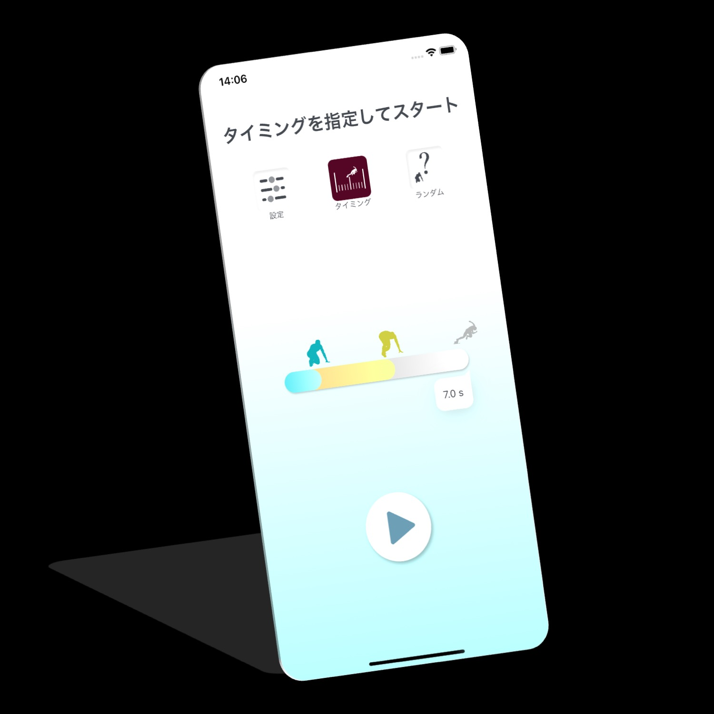
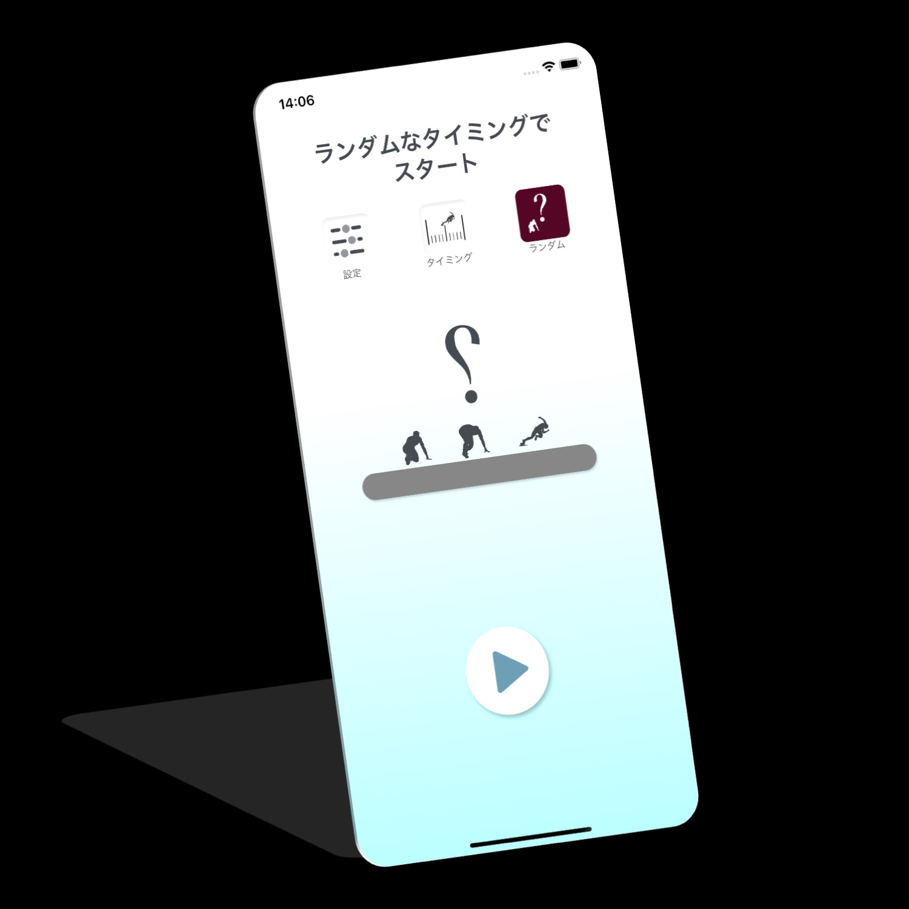
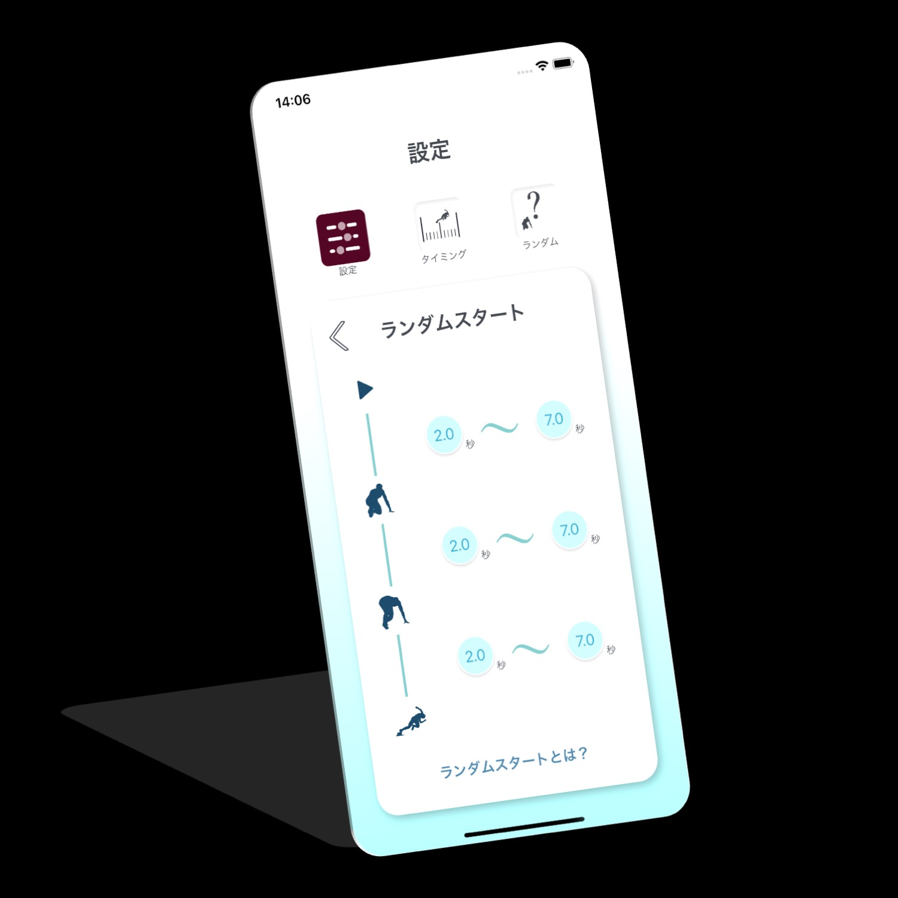
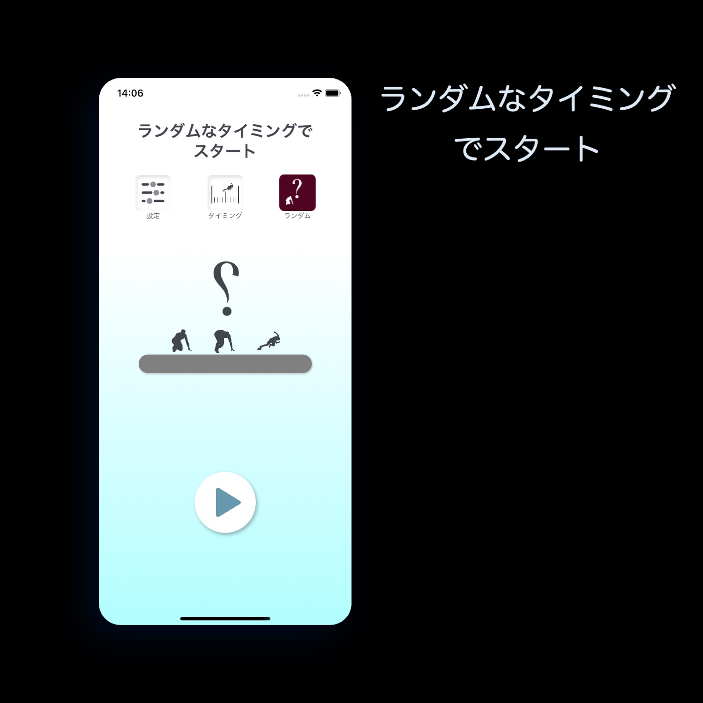

人の声・スタート音を選択
人の声による合図やスタート音を選べます。「On Your Marks」「Set」「ピストル音」など、練習に合わせた音でスタートの流れを確認できます。
陸上・水泳の選手とコーチのためのスタート練習
陸上の短距離走にも、水泳のスタート練習にも。スターターキットは、人の声やスタート音をiPhoneから再生できるアプリです。時間を設定してスタート、ランダムな時間にスタート、手動でスタート。練習の目的に合わせて合図を出せます。
基本機能は無料で利用できます。
累計2.1万ダウンロード2026年9月20日現在
App Storeで見る
主な機能
使いたい音を選び、スタート方法を設定します。1人での反復練習から、コーチが合図を出すチーム練習まで活用できます。
人の声による合図やスタート音を選べます。「On Your Marks」「Set」「ピストル音」など、練習に合わせた音でスタートの流れを確認できます。
合図までの時間や各合図の間隔を設定してスタートできます。準備する時間を確保しながら、決めたタイミングで繰り返し練習したいときに便利です。
合図の間隔をランダムにできます。スタートのタイミングを予測しにくくすることで、音を聞いて動き出す反応練習に取り組めます。
任意のタイミングで手動操作してスタートの合図を出せます。コーチが選手の準備を確認しながら進める練習や、チーム練習に活用できます。
スタート時の反応時間を計測し、トレーニングの振り返りと改善に活用できます。
スタート動作を撮影して見返せるため、フォームや音への反応を視覚的に確認できます。
利用シーン
スタートの合図に合わせて構えから動き出す練習に。時間指定で同じ流れを反復したり、ランダムな合図で音への集中を意識したりと、目的に応じて使い分けられます。
水泳用のスタート音にも対応しています。水泳のスタート音を使って、合図に反応して動き出す練習ができます。時間指定・ランダム・手動から練習に合う方法で合図を出せます。
無料で始める
スターターキットの基本機能は無料で利用できます。陸上や水泳のスタート練習に取り入れてみてください。アプリ内課金や各機能の利用条件は、App Storeとアプリ内の案内をご確認ください。
アプリ画面




すぐわかる回答
スターターキットは、陸上の短距離走や水泳のスタート練習に使えるiPhoneアプリです。人の声やスタート音を再生し、時間指定・ランダム・手動でスタートの合図を出せます。基本機能は無料で利用できます。
はい。陸上の短距離走に加えて、水泳のスタート練習にも使えます。水泳用のスタート音にも対応しているため、水泳の合図に合わせた反応練習ができます。時間指定・ランダム・手動から、練習内容に合うスタート方法を選べます。
はい。人の声による合図やスタート音を選択できます。「On Your Marks」「Set」「ピストル音」などを使って、スタートの流れに沿った練習ができます。
時間を設定してスタート、ランダムな時間にスタート、手動でスタートの3種類です。一定の流れでの反復練習、予測しにくい合図への反応練習、コーチによる合図など、目的に合わせて使い分けられます。
はい。合図までの時間や「On Your Marks」「Set」「ピストル音」の間隔を設定できます。準備に必要な時間を確保したり、同じタイミングで反復練習したりする場合に活用できます。
合図の間隔をランダムにすることで、スタートのタイミングを予測しにくくできます。決まったリズムに合わせて動き出すのではなく、音を聞いて反応する練習に使えます。
はい。手動でスタートできるので、コーチが選手の準備を確認してから任意のタイミングで合図を出せます。チーム練習や個別指導にも活用できます。
はい。スターターキットの基本機能は無料で利用できます。アプリ内課金や各機能の利用条件は、App Storeとアプリ内の案内をご確認ください。
はい。時間指定やランダムスタートを使えば、別の人に合図を頼まずに1人でもスタート練習ができます。コーチやチームでの練習には、手動スタートも活用できます。
はい。スタート時の反応時間を計測し、練習ごとの振り返りに活用できます。
はい。スタートの動きを動画で撮影し、フォームや音への反応を見返せます。
開発者
医師・ランナーとして活動しながらiOSアプリを開発しています。スターターキットは、身近なiPhoneでスタート練習を行えるアプリです。陸上だけでなく、水泳の練習にも活用できます。